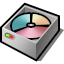

Disk İzlencesi
| Masaüstü Çubuğu: | ||
| Konum: | /boot/system/apps/DriveSetup | |
| Ayarlar: | ~/config/settings/DriveSetup |
Disk İzlencesi ile disk bölümleri oluşturabilir, silebilir ve biçimlendirebilirsiniz. Şu anda mevcut bölümleri yeniden boyutlandıramaz veya silemez; bu nedenle bölümlendirilmemiş bir diske (belki bir harici USB bellek veya başka bir sabit disk) veya ilk bölümlendirme işlemini GParted LiveCD gibi başka bir araçla tamamlamanız gerekebilir.
Yukarı kısımda, aşağıdaki seçili aygıtta bulunan tüm bölümlerin grafik bir dağılımı bulunur. Her aygıt öntanımlı olarak dört adet birincil bölüm içerebilir. Bu limit, bölümlerden birini genişletilmiş yaparak aşılabilir; böylece kuramsal olarak sayısız mantıksal bölüm barındırılabilir.
Her bir mantıksal bölümün ayrıntılarını görmek için aygıtın başında görünen +/- araç takımıyla bir listeyi genişletebilirsiniz.
Renkler ve simgeler kullanılabilir diskler ve bölümler hakkında daha fazla bilgi sağlamaya yardımcı olur.
Aşina olduğumuz sabit disk, CD sürücü veya USB bellek simgelerinin dışında bağlanma kipini gösteren birkaç simge daha vardır:
| /boot bölümü | ||
| Şifrelenmiş bir bölüm | ||
| SMB/NFS üzerinden paylaşılan bir bölüm. | ||
| Saltokunur bağlanmış bir bölüm | ||
| Bağlanmış bir yansı dosyası (ayrıca bkz. diskimage komutu) |
Bağlandığında, renkli bir çubuk bölümün kullanılan alanını belirtir. Renk, bölüm türüne göre değişiklik gösterir:
| BFS ile biçimlendirilmiş bir bölüm | ||
| BFS dışı bir dosya sistemi ile biçimlendirilmiş bir bölüm | ||
| Saltokunur bir bölüm | ||
| Şifrelenmiş bir bölüm |
Sağ tık menüsünden veya menüsünden bir bölümü seçebilir ve çeşitli komutları uygulayabilirsiniz; örneğin / veya .
Aynı zamanda bir bölümü veya toptan işlemlerini yapmanız da olanaklıdır.
 Disk ilklendirme
Disk ilklendirme
Eğer daha büyük bir diskin yalnızca bir bölümünü değil de diskin tümünü tek bir bölüm olarak kullanacaksanız öncelikle diski ilklendirmeniz gerekmektedir.
Bunu ham diski aygıt listesinden seçip menüsünden bir bölümlendirme haritası seçerek yapabilirsiniz. BIOS ile önyükleme için doğru seçenektir.
Yeni bir bölüm oluşturma
Bir sürücüde, yukarıdaki boş gibi biçimlendirilmemiş bir alan bulduğunuzda ile bu alanda yeni bir bölüm oluşturabilirsiniz (ALT C).
Bu iletişim kutusunda bölüm boyutunu ve türünü girmeniz istenir. Bölümü bir Haiku kurulumu için kullanacaksanız veya Haiku's özel öznitelikler ve sorgular gibi dosya sistemi özelliklerini kullanmak istiyorsanız 'ni seçin. Başka işletim sistemlerinde bu bölümü görme ve kullanma için destek olmayabilir.
onay kutusu yalnızca birincil bölüm oluşturduğunuzda kullanılabilir olur. Bölümde bir Haiku kurulumunu önyüklemek istiyorsanız bu onay kutusunu imlemeniz gerekir.
Yeni oluşturulmuş bölümü kullanmadan önce onu bir dosya sistemi ile biçimlendirmeniz gerekir.
Bir bölümü biçimlendirme
Yalnızca bağlantısı kesilmiş bölümler menüsünden bir dosya sistemi seçerek biçimlendirilebilir. (BFS), bir Haiku önyükleme bölümü için zorunludur ve Haiku ile kullanılacak veri bölümleri için de kesinlikle önerilir. Yalnızca BFS ile biçimlendirilmiş bölümler sorgulanabilir ve Haiku'nun dosya öznitelikleri özelliklerini tam olarak destekler.
Burada bölüm adını ve blok boyutunu ayarlayabilirsiniz. Blok boyutu, bir dosyanın en az kullanacağı alanın bayt türünden gösterimidir. Blok başına 2048 bayt önerilir; ancak özel gereksinimleriniz varsa istediğiniz başka bir değeri de girebilirsiniz.
Kullanacağınız veride sorgulama özelliklerini kullanmayacaksanız onay kutusunu kaldırarak indeks için kullanılacak veriyi azaltabilirsiniz.